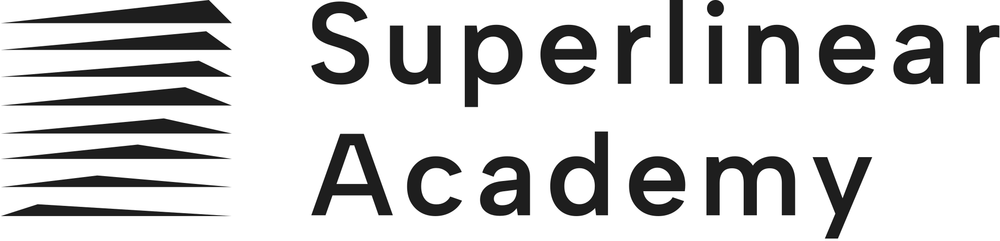

AI Enablement for Investment Research
Turning daily judgment, actions, and context into workflows that compound.
AI leverage for PMs begins when daily work stops leaking value.
Public information is abundant. The scarce work is capturing action, preserving context, and turning judgment into reusable workflow.
1. Actions
Action items move from transcript to calendar, email, owner, and follow-up without manual tool switching.
2. Opportunities
Repeated themes across meetings, notes, and calls become visible before they disappear into scattered files.
3. Context
Every useful output leaves a trace: people, source links, decisions, tags, and reusable work patterns.
The session should make the operating model concrete.
| Question | What the session should resolve |
|---|---|
| Where does value leak today? | Action items, handoffs, background context, repeated themes, and unfinished follow-through. |
| What changes when AI can use tools? | One natural-language instruction can trigger calendar, email, document creation, retrieval, and notification. |
| Why does context infrastructure matter? | Daily work becomes searchable memory instead of isolated transcripts and disposable chats. |
| What will the course train? | The craft of specifying, delegating, inspecting, and packaging work so PMs can build their own durable workflows. |
Yan will demo one internal meeting turning into execution and memory.
Beat 1 · Capture
AI summarizes an internal onboarding process review and identifies concrete action items.
Beat 2 · Execute
A one-sentence instruction creates a calendar invite, sends a background email, and notifies the owner.
Beat 3 · Compound
The transcript and artifacts become tagged context rows that can be filtered, pivoted, and reused later.
Cornell economics. Statsig experimentation. Superlinear AI Builders.

The deck moves quickly from operating shift to practical training path.
Natural language becomes useful when it dispatches work across tools.
Chat is one surface. The operating layer touches files, tools, data, calendars, and follow-up.
Bill Gates says he has seen two revolutionary technologies. AI was the second. What was the first?
Take a guess before the reveal. It was not the internet, mobile, or cloud.

The first was GUI: it changed who could operate compute.
Before GUI
Computing power was gated by command-line fluency and programming capability.
After GUI
The mouse, windows, and icons made computing useful to non-programmers.
AI gives a third interface to compute: general-purpose work through natural language.
A new interface produces leverage only after work is redesigned around it.


Casual AI use leaks value in three familiar places.
1. Follow-through
The answer arrives, but the calendar invite, email, owner, and check-in still depend on manual discipline.
2. Context supply
Each conversation depends on the human re-briefing goals, constraints, prior decisions, and quality standards.
3. Memory
Useful work sits in chat history instead of becoming a reusable file, checklist, artifact, or context row.
Agentic AI turns instruction into a closed-loop workflow.
The market signal is workflow redesign.
AI-native firms show how quickly work can move when the job is rebuilt around agents. Incumbents show the governance requirements for high-stakes environments.
Cursor shows how fast a workflow product can become the daily environment for a high-value profession.
| Milestone | Reported ARR / valuation | Why it matters |
|---|---|---|
| Jan 2025 | $100M ARR | Reached a scale prior SaaS category leaders took materially longer to achieve. |
| Jun 2025 | $500M ARR; $9.9B valuation | Enterprise and individual developer adoption moved in parallel. |
| Nov 2025 | $1B+ ARR; $29.3B valuation | AI-native workflow products compressed the traditional B2B growth curve. |
| 2026 reports | $2B ARR; $50B talks | The market is pricing workflow capture beyond seat-based software. |
The strongest AI users have moved past "can AI code?" They are changing how work gets specified and reviewed.
AI writes serious production code
Leaders at Anthropic and OpenAI have publicly described AI writing a very large share of their own code, especially in AI-native teams.
Good users delegate complete loops
They specify the task, let the agent work, review the diff, tighten tests, and preserve the learning in the repo or workflow.
The gap is mastery
Weaker users lack the craft of specifying, decomposing, inspecting, testing, and iterating with the model.
Real AI mastery is verb-first.
Noun learning
Model names, tools, features, RAG, MCP, agents, benchmarks. Useful vocabulary, still upstream of craft.
- Can sound current in meetings
- Often becomes tool-chasing
- Rarely changes output quality by itself
Verb learning
Specify, decompose, delegate, inspect, test, revise, document, reuse. This is where the capability actually lives.
- Turns AI from answer box into worker
- Creates reusable assets and judgment systems
- Transfers across models and tools
Goldman is a regulated-incumbent adoption signal.
What we learned| What we learned | Why it matters to Dymon |
|---|---|
| Enterprise adoption has started | When a compliance-bound Wall Street firm pilots autonomous engineers, the question becomes how to govern the work. |
| Supervision is the enterprise problem | Access, permissions, review, rollback, provenance, and accountability matter more than the tool name. |
| Research workflows share the same shape | A PM workflow also needs specification, source hierarchy, execution, verification, and persistent artifacts. |
Borrow Silicon Valley's workflow speed and finance's governance discipline.
AI-native companies
Cursor, Claude Code, and similar workflows show the upside when work is designed around agents from the beginning.
- Workflow first
- Fast feedback loops
- Artifacts become reusable by default
Existing incumbents
Goldman-style adoption shows the second half of the problem: agentic work must be safe enough for regulated, high-stakes environments.
- Governance first
- Explicit review paths
- Permissioned access and auditability
Some operators are already treating AI as an operating-model shift.
Shopify
Teams must consider AI before asking for incremental headcount or resources. AI proficiency becomes part of the management system.
Block
Dorsey and Botha describe moving from hierarchy as information routing toward shared company and customer world models that intelligence tools can read and update.
Takeaway
The paradigm shift is intrinsically radical because it changes work design, coordination, and resource allocation.
The PM translation: move AI up the chain from information to judgment and action.
For portfolio managers, the bottleneck is rarely access to text. The bottleneck is filtering, mechanism, decision, sizing, and follow-through.
A PM gets paid to turn available information into a better decision.
PMs get paid for the correct contrarian view.
Naval's useful distinction
The valuable contrarian reasons independently from the ground up under pressure to conform; reflexive disagreement misses the point.
What AI should help with
- Understand the consensus model
- Find the correct contrarian view
- Turn it into a tradeable decision

Coverage is useful. Context lets AI assist the scarce parts of PM work.
One-off research
Comprehensive retrieval, source synthesis, consensus framing, and polished summary.
- Good for coverage
- Often balanced and plausible
- Weak on desk-specific judgment and action
Context-aware workflow
Work executed inside a PM's source hierarchy, variant lens, mechanisms, failure modes, and action standards.
- Filters what matters now
- Tests the correct contrarian view
- Connects evidence to decisions and follow-up
For a PM, context works as the operating system of judgment.
| Context layer | What it contains | What it changes in output |
|---|---|---|
| Source hierarchy | Which evidence types carry weight by market, sector, and situation. | Prevents all sources from being flattened into equal prose. |
| World model | How industry mechanisms, macro drivers, competition, and policy connect. | Moves from listing facts to causal reasoning. |
| Variant lens | What consensus tends to miss or over-discount in a coverage area. | Forces a view instead of a balanced summary. |
| Action standard | What makes an insight tradeable: catalyst, timing, sizing, risk, monitor. | Connects research output to decision quality. |
The demo: one meeting becomes execution, artifacts, and compounding context.
Three connected beats, designed to be tangible rather than argumentative.
Start with an internal onboarding process review transcript.
Input
Yan and team review the Q2 onboarding deck: buddy system, case-driven training, compliance material, and first-week expectations.
First ask
"Summarize this meeting and identify the action items."
Output
A normal meeting summary plus specific owners: Priya alignment, Sarah one-pager, culture stories, and v2 review changes.
One sentence moves an action item across calendar and email.
Yan's instruction
"Action item 1: align with Priya in person. Find a mutual 30-minute slot next week, send the invite, and include the background note."
What the agent does
Reads Yan and Priya's calendars, creates the invite, drafts and sends the background email, then pushes a completion notification.
Another sentence turns scattered background into a one-pager Sarah can use.
Instruction
"For action item 2, make a one-pager for Sarah using the Tom onboarding case, ABC Capital KYC, and SOP 4.2."
Retrieval
The agent finds local case notes, Google Drive correspondence, and the compliance SOP, then cites the source links.
Artifact
It creates a Google Doc, shares it with Sarah, sends a short email, and records the derived artifact.
The transcript and artifacts become a context ledger.
| Captured field | Why it matters later |
|---|---|
| People, source, topic, owner | Future agents know who was involved, where the claim came from, and who owns follow-up. |
| Linked context IDs | The one-pager, transcript, SOP, case note, and email chain stay connected. |
| Derived artifact and status | The system can distinguish "theme mentioned" from "work product created" from "follow-up still open." |
| Pivot-ready CSV | The team can filter a month of context by China energy, Indonesian coal, source, person, or missing artifact. |
Judge the demo by captured work.
| Standard | What to look for |
|---|---|
| Missed actions | Does the system turn action items into owners, calendar events, emails, and reminders? |
| Missed opportunities | Can it surface repeated topics across meetings, calls, voice notes, and AI sessions? |
| Missed context | Does useful work become structured memory rather than disappearing into transcript or chat history? |
| Hands-off execution | Can a PM give a concise instruction, leave the system to run, then review the finished artifact? |
| Course transfer | Can Dymon PMs learn the method and build similar workflows around their own work? |
The course turns the demo pattern into Dymon's operating habit.
Yan's demo is the reference case. The course helps PMs build the same kind of leverage around their own workflows.
Start from one real workflow, then package the useful pieces.
1. Pick the workflow
A meeting-to-action loop, research note, weekly brief, post-event review, or recurring delegation pattern.
2. Encode the judgment
Capture source hierarchy, quality standard, failure modes, memo style, and what counts as a usable output.
3. Promote the pattern
Turn the successful run into a reusable skill, checklist, context file, and team baseline candidate.
Three sessions, one learning curve.
Use AI for a complete work loop.
Participants practice specifying outcomes, context, owners, and quality standards on real Dymon-adjacent tasks.
Package judgment as context.
Distill personal standards, source hierarchy, recurring patterns, and workflow instructions into context files and skills.
Turn work into infrastructure.
Extend the workflow into retrieval, artifact creation, source links, scheduling, delegation, review, and context capture.
The course targets five gaps between casual AI use and real PM leverage.
| Gap | Casual AI use | Target standard after training |
|---|---|---|
| 1. Usable output | Polished summary, weak stance, heavy PM rewrite. | Clear view, memo fit, explicit judgment dimensions, and next action. |
| 2. Quality diagnosis | Rotates prompt/model on instinct. | Diagnoses context, working mode, prompt, tool access, and model limitations separately. |
| 3. Full-task delegation | Human watches every step and becomes the pipeline. | One sentence delegates a work loop; the agent retrieves, acts, checks, and reports back. |
| 4. Compounding memory | Last week's tuning is lost in chat history. | Personal and team context accumulate; new work inherits prior judgment. |
| 5. New capability | AI accelerates existing workflow. | AI enables missed-action capture, thesis-drift warning, and follow-up systems that previously had no practical home. |
Dymon leaves with a first operating layer.
Jay's Excel analogy is the right learning frame.
AI and Excel are both general-purpose work environments. Both become professional leverage after people learn the craft.
1. Table stakes
Excel fluency became a baseline business skill. AI fluency is moving into the same category for people who make decisions from information.
2. Learnable
Business people learned Excel without becoming software engineers: real work, repetition, feedback, and templates.
3. Deep craft
Opening Excel is easy; modeling well is hard. AI is similar: easy to start, but strong users compound a much larger advantage.